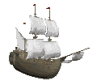
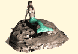

Island (At Long Last)
At Long Last began as a haiku but just kept on going. I'm not entirely sure where the dark overtones come from, nor the Siren theme. It's not like I often think about sea-dwelling homicidal nymphs.
- Parimal Satyal, 15 April 2015
Those adrift at sea might sight it,
See shelter from the storm.
And moor their ship and wander
This island long forlorn.
“At long last we’ve made it!”,
The captain might declare,
Unb'known to him the dreary
Night that's to become his lair.
For when night has fallen
And sleep comes to them all,
That sweetest wail will beckon
From that cold, remorseless mare.
See, this island hides a secret
That few have lived to share.
The captain’s men shall know it
As they’re driven to despair.
The sirens, unforgiving
Escort them to their graves,
A gentle chant now guides them
To a realm beyond these waves
Day breaks on the island
And silence greets the shore,
But a lone ship to remember
What befell the night before.
Many moons have passed since
And that ship no longer stands,
On the horizon, two lost seamen
Revel 'pon what they’ve chanced:
“At long last we’ve made it!”
Shouts the fellow to his mate.
As they celebrate their fortune
The sirens lie in wait.

— ← back home